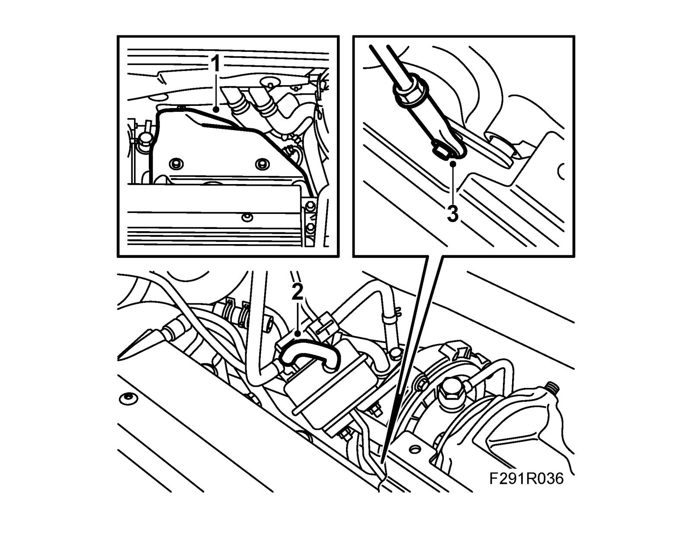
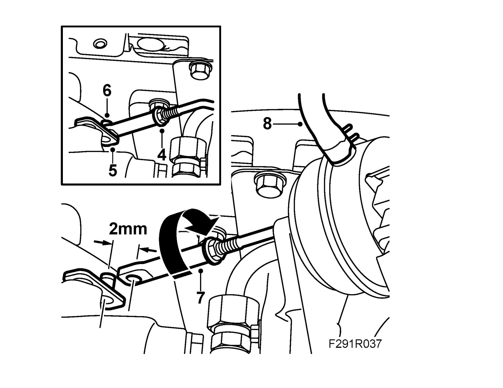
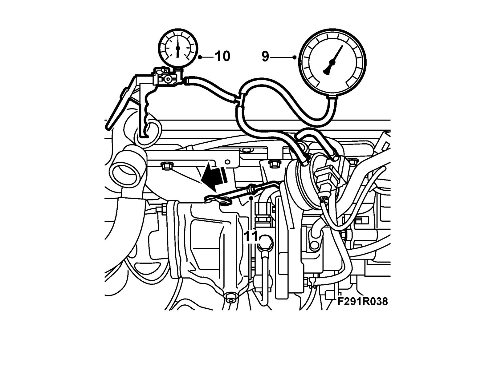
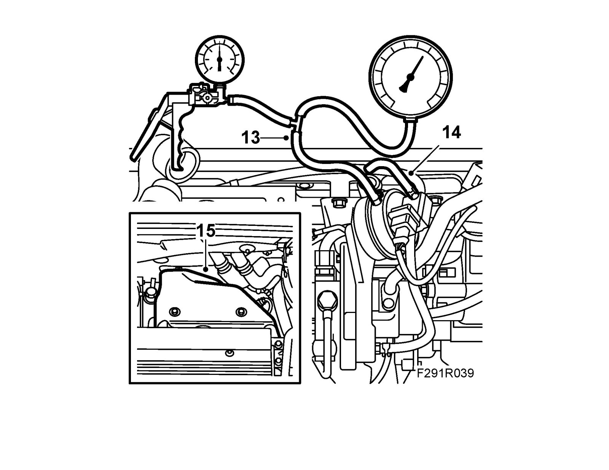

Component Tests and General Diagnostics
Checking and adjusting basic charge pressure, B207Checks
1. Remove the turbo heat shield by undoing the bolts and pulling the shield straight up out of the clip on the back.

2. Detach the hose from the diaphragm box.
3. Remove the control arm retaining clip with 83 94 538 Circlip tool.
4. Grip the pushrod with 83 94 066 Pliers or similar tool and undo the nut. B207R: Use a pair of flat nose pliers and a screwdriver.

5. Hold the operating arm and remove the pushrod from it. Secure the operating arm as it might otherwise "overcentre".
6. Move the control arm on the wastegate to the "Closed" position and adjust the end piece so that the pushrod can easily be fitted on the control arm pin.
7. Detach the pushrod from the control arm pin. Turn the end piece clockwise about 2 turns to attain a tension of 2 mm. Hook the pushrod to the control arm pin.
8. Connect 30 14 883 Pressure/vacuum pump to the diaphragm box and 83 93 514 Charge pressure meter.
9. Pump up the pressure carefully and read off the pressure on the pressure gauge just as the control rod starts to move (approx. 1 mm). The pressure should be 0.25 - 0.27 bar.

10. If the pressure is too low, shorten the rod until the correct pressure is obtained.
11. Undo the control rod and apply a thin layer of 30 20 971 Screw-thread paste or similar to the control arm pin.
12. Fit the control rod and clip, grip the control rod and lock the nut.
13. Remove the pressure gauge and pump.

14. Refit the hose to the diaphragm box.
15. Fit the turbocharger heat shield.
16. Carry out charge air adaptation:
16 a. Run the car to heat up the engine.
16 b. Accelerate full throttle at 2000 rpm a few times. The time the engine speed is in the range 2000-4000 rpm must exceed 2 seconds.
Note
Charge air adaptation must be carried out in as high a gear as possible. If charge air adaptation is not carried out, the customer must be made aware that engine torque may fluctuate slightly the first few times during hard acceleration.